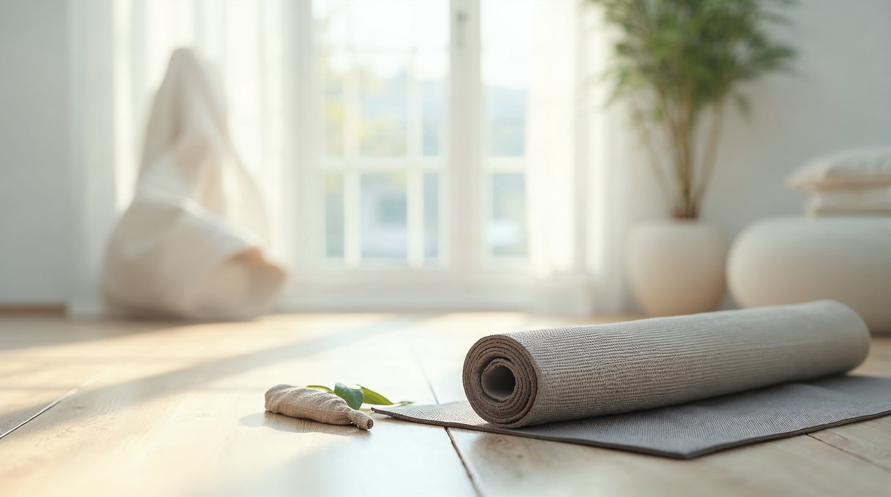
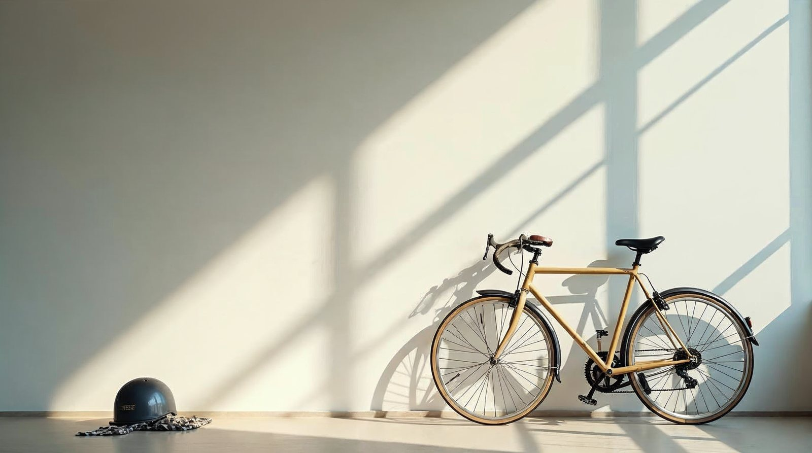
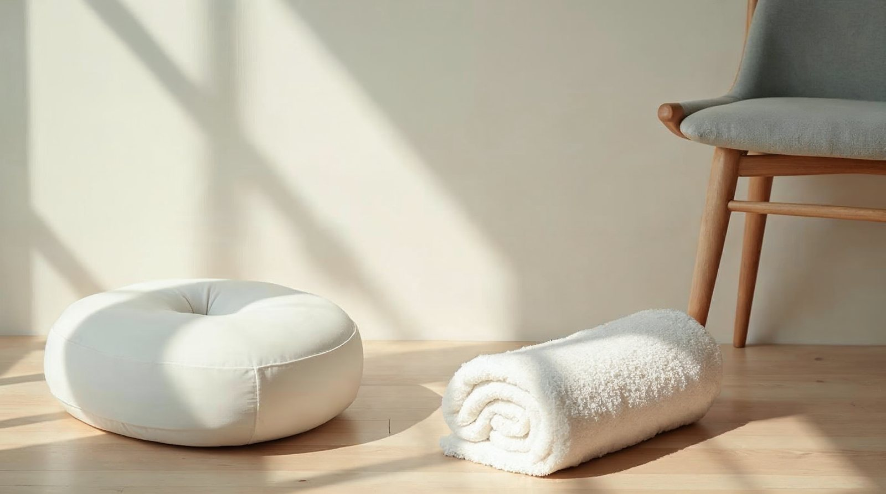
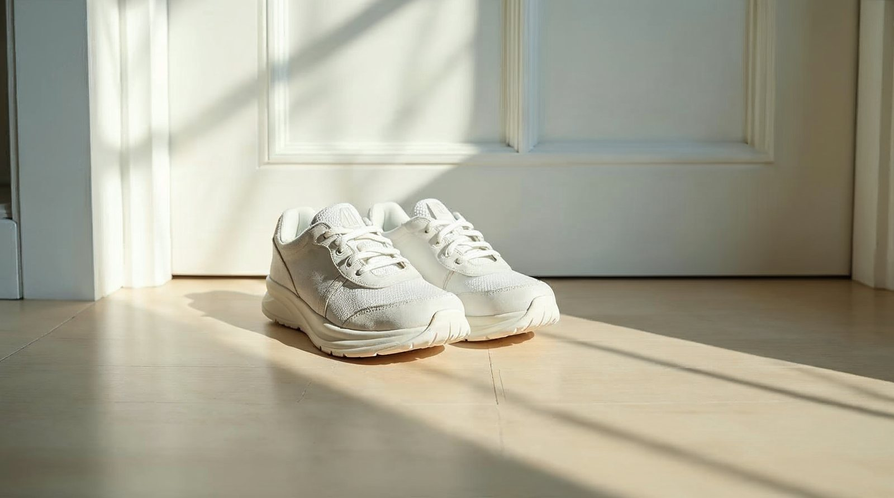
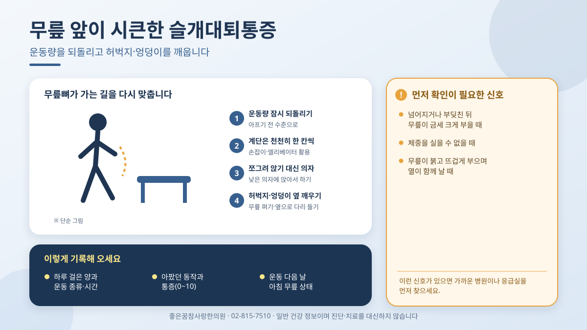

이종호 한의사 감수좋은꿈참사랑한의원 대표원장 (한의사 면허번호 19769)발행 2026-11-26 · 수정 2026-11-26
이 글의 차례
영화관에서 두 시간 남짓 앉아 있다가 일어서는데, 무릎 앞쪽이 뻣뻣하게 굳어 있다가 시큰하게 울립니다. 몇 걸음 걷고 나면 또 괜찮아지는데, 집에 오는 길 지하철 계단을 내려갈 때 다시 무릎뼈 주변이 찌릿합니다. 붓지도 않았고 넘어진 적도 없는데 왜 이럴까 싶습니다.
무릎 앞쪽, 동그란 무릎뼈 주변이 시큰하고 아픈 상태를 흔히 슬개대퇴통증이라고 부릅니다. 무릎뼈(슬개골)와 그 뒤의 허벅지뼈(대퇴골)가 맞닿아 미끄러지는 자리에 부담이 쌓여 생기는 통증이라는 뜻입니다.
달리기를 하는 분에게 많아 '러너스 니'라고 부르기도 하지만, 계단을 많이 오르내리는 분, 쪼그려 앉는 일이 많은 분, 오래 앉아 지내는 학생에게서도 흔히 봅니다.
이 통증은 사진을 찍어도 뚜렷한 이상이 보이지 않는 경우가 많습니다. 그래서 검사에서는 괜찮다는데 왜 아픈지 모르겠다는 말씀을 진료실에서 자주 듣습니다. 아픈 것은 분명한데 이름이 잡히지 않으니 더 답답하셨을 겁니다.
저는 이럴 때 무릎뼈가 어떤 길로 움직이고 있는지, 그 길을 잡아 주는 근육들이 제 몫을 하고 있는지를 함께 살펴봅니다. 무릎 앞쪽의 통증은 무릎 하나만의 문제라기보다 엉덩이와 허벅지, 발까지 이어진 다리 전체의 움직임과 맞물려 있는 경우가 많습니다.
왜 무릎뼈 주변이 시큰해질까요
무릎뼈는 허벅지 앞 큰 근육의 힘줄 안에 들어 있는 작은 뼈입니다. 무릎을 굽혔다 펼 때마다 허벅지뼈 끝의 홈을 따라 위아래로 미끄러집니다. 마치 기차가 레일 위를 달리듯, 무릎뼈도 정해진 길을 따라 움직이는 셈입니다.
이 길에서 조금 바깥으로 치우치거나, 홈에 눌리는 힘이 한쪽으로 쏠리면 무릎뼈 뒤쪽 연골과 주변 조직에 부담이 쌓입니다. 계단을 내려가거나 쪼그려 앉을 때는 무릎뼈가 홈에 눌리는 힘이 몸무게의 몇 배로 커진다고 알려져 있어, 이런 동작에서 통증이 두드러집니다.
무릎뼈의 길을 흔드는 요인은 여러 가지입니다. 허벅지 안쪽 근육이 약하거나 바깥쪽이 지나치게 단단한 경우, 엉덩이 옆 근육이 약해 걸을 때 무릎이 안으로 모이는 경우, 발 아치가 무너져 다리가 안쪽으로 돌아가는 경우가 대표적입니다. 갑자기 운동량을 늘렸을 때도 흔히 시작됩니다.
한의학에서는 무릎을 힘줄이 모이는 곳으로 보았습니다. 힘줄을 기르는 기운이 지치면 무릎이 쉽게 시큰거리고 오래 버티기 어렵다고 여겨 왔습니다. 그래서 저는 무릎 자체와 함께, 피로가 쌓여 있지는 않은지, 잠과 회복이 잘 되고 있는지도 함께 여쭙습니다.
이런 모양으로 불편이 나타납니다
가장 흔한 것은 무릎뼈 주변이나 뒤쪽이 둔하게 시큰한 느낌입니다. 어디가 아프냐고 여쭤 보면 한 점을 짚기보다 손바닥으로 무릎 앞을 둥글게 감싸듯 가리키시는 경우가 많습니다.
계단은 오를 때보다 내려갈 때 더 불편하다는 분이 많습니다. 쪼그려 앉기, 무릎 꿇기, 경사진 길 내려가기도 힘들어지고, 오래 앉아 있다가 일어날 때 무릎이 뻣뻣하게 굳은 느낌이 들기도 합니다. 이를 두고 '영화관 증상'이라고 부르기도 합니다.
무릎을 굽혔다 펼 때 사각거리거나 뽀드득하는 소리가 함께 나기도 합니다. 소리만 나고 아프지 않다면 크게 걱정하지 않으셔도 되는 경우가 많습니다. 소리와 함께 통증이나 붓기가 따라온다면 그때는 무릎 안쪽 상태를 좀 더 살펴봅니다.
비슷해 보이지만 다르게 살펴야 하는 경우
무릎뼈 바로 아래, 힘줄이 붙는 한 점이 콕 집히듯 아프고 점프나 달리기 뒤에 심해진다면 무릎 힘줄 쪽 문제를 먼저 생각합니다. 무릎 앞쪽 통증이라도 무릎뼈 주변 전체가 시큰한 것과는 아픈 자리가 조금 다릅니다.
무릎 안쪽이나 바깥쪽 관절선이 아프고, 비틀 때 걸리거나 무릎이 툭 빠지는 느낌이 있다면 반월상연골 쪽을 함께 확인합니다. 달리기 뒤 무릎 바깥쪽이 아프다면 허벅지 바깥 띠 쪽 문제일 수도 있습니다.
중년 이후에 무릎이 자주 붓고 아침에 뻣뻣하며 계단 오르내리기 모두 힘들다면 퇴행성 관절염과 겹쳐 있는지를 봅니다. 무릎뼈 뒤쪽 연골이 먼저 닳는 경우도 있어서, 나이와 붓기, 사진 소견을 함께 놓고 판단합니다.
아이나 청소년이 운동 뒤 무릎뼈 아래 튀어나온 뼈가 아프다고 한다면 성장기에 생기는 다른 문제를 생각합니다. 같은 무릎 앞쪽이라도 나이에 따라 살필 방향이 달라집니다.

다리 전체의 움직임을 함께 봅니다
무릎 앞쪽이 아파 오신 분께 저는 자주 거울 앞에서 한 발로 서서 무릎을 살짝 굽혀 보시라고 말씀드립니다. 이때 무릎이 엄지발가락보다 안쪽으로 쏠리며 흔들린다면, 엉덩이 옆 근육이 다리를 충분히 붙잡아 주지 못하고 있을 가능성이 있습니다.
발도 함께 봅니다. 서 있을 때 발 안쪽 아치가 납작하게 내려앉아 있거나, 신발 뒤축 안쪽이 유난히 빨리 닳는다면 다리가 안쪽으로 돌아가면서 무릎뼈의 길이 흔들릴 수 있습니다. 반대로 발이 지나치게 뻣뻣해 충격을 잘 흡수하지 못하는 경우도 있습니다.
허벅지 앞과 바깥, 종아리가 단단하게 굳어 있는 것도 흔히 봅니다. 근육이 짧아지면 무릎뼈를 위나 바깥으로 당기는 힘이 커집니다. 그래서 무릎 앞쪽 통증을 볼 때는 무릎 주변만 누르기보다 엉덩이부터 발끝까지 손으로 차례로 짚어 내려갑니다.

어떤 생활에서 자주 시작될까요
새로 달리기나 등산을 시작해 몇 주 만에 거리를 확 늘린 분에게서 흔히 시작됩니다. 몸은 아직 준비가 덜 되었는데 의욕이 앞서면, 무릎뼈 뒤쪽이 감당해야 할 양이 갑자기 커집니다. 처음 한두 주는 괜찮다가 어느 날부터 계단에서 시큰해지는 모양이 많습니다.
하루 대부분을 앉아서 보내는 학생이나 사무직도 자주 만납니다. 무릎을 굽힌 채 오래 있으면 무릎뼈가 홈에 눌린 상태로 머물고, 허벅지와 엉덩이 근육은 점점 쓰지 않게 됩니다. 그러다 주말에 오래 걷거나 계단이 많은 길을 다녀오면 불편이 한꺼번에 드러납니다.
언덕과 계단이 많은 동네에 사시는 분도 비슷합니다. 매일 오르내리는 길 자체가 무릎 앞쪽에 꾸준한 부담이 됩니다. 이런 분들께는 길을 바꾸라고 말씀드리기보다, 내려가는 속도와 보폭, 신발부터 함께 살펴봅니다.
체중이 늘었거나, 아이를 자주 안아 올리는 시기에도 무릎 앞쪽이 시큰해지기 쉽습니다. 무릎이 견뎌야 하는 무게가 커진 만큼, 그 무게를 나눠 받아 줄 엉덩이와 허벅지 근육이 함께 따라와 주어야 합니다.
먼저 이렇게 여쭙니다
무릎을 보기 전에, 저는 대략 이런 순서로 여쭙니다.
- 언제부터 아프셨고, 그 무렵 운동량이나 걷는 양이 늘어난 일이 있었나요?
- 계단을 오를 때와 내려갈 때 중 어느 쪽이 더 불편한가요?
- 오래 앉았다 일어날 때, 쪼그려 앉을 때, 무릎을 꿇을 때는 어떤가요?
- 무릎이 붓거나, 걸리거나, 툭 빠지는 느낌이 든 적이 있나요?
- 한쪽만 아픈가요, 양쪽 모두 아픈가요? 예전에 무릎을 다친 적이 있나요?
- 주로 신는 신발과 하루에 걷는 양은 대략 어떻게 되나요?
자주 신는 운동화를 신고 오시거나 사진으로 밑창을 찍어 오시면, 닳은 모양을 함께 보며 걸음걸이를 짐작하는 데 도움이 됩니다.

일상에서 먼저 해 볼 수 있는 것
무릎 앞쪽이 아프면 무릎을 아예 쓰지 않으려는 분이 많습니다. 하지만 완전히 쉬기보다, 통증을 키우는 동작은 줄이고 무릎을 받쳐 주는 근육은 깨우는 쪽이 오래 갑니다.
- 운동량을 갑자기 늘렸다면 거리와 횟수를 아프기 전 수준으로 잠시 되돌리기
- 계단은 오를 때 손잡이를 잡고, 내려갈 때는 한 칸씩 천천히, 가능하면 엘리베이터 활용하기
- 깊이 쪼그려 앉거나 무릎 꿇고 하는 일은 낮은 의자를 두고 앉아서 하기
- 오래 앉아 있을 때는 무릎을 90도보다 조금 더 펴 두고, 한 시간에 한 번 일어나 걷기
- 누워서 무릎 아래 수건을 받치고 허벅지 앞에 힘을 주어 무릎을 지그시 펴는 연습하기
- 옆으로 누워 위쪽 다리를 천천히 들어 올리며 엉덩이 옆 근육 깨우기
허벅지 앞과 바깥, 종아리를 가볍게 늘이는 것도 도움이 됩니다. 운동 뒤 무릎 앞이 시큰하다면 수건에 싼 얼음주머니를 10분 남짓 대 보시고, 반대로 아침에 뻣뻣하다면 따뜻한 샤워로 풀어 주는 쪽이 편한 분도 있습니다. 내 무릎이 어느 쪽에 편한지 적어 보세요.
운동은 무릎에 통증이 거의 없는 범위에서 시작하는 것이 원칙입니다. 하고 나서 다음 날 아침 무릎이 더 아프다면 양을 줄이고, 그렇지 않다면 조금씩 늘려 가는 식으로 맞춰 갑니다.
한의원에서 함께 살필 수 있는 경우
- 사진에서는 큰 이상이 없다는데 계단이나 쪼그려 앉기에서 무릎 앞이 계속 시큰한 경우
- 운동이나 걷는 양을 늘린 뒤 시작된 무릎 앞 통증이 몇 주째 이어지는 경우
- 허벅지와 엉덩이, 종아리 근육이 늘 단단하게 굳어 있는 경우
- 무릎 때문에 오래 앉거나 서 있기가 불편해 일상과 잠이 흔들리는 경우
좋은꿈참사랑한의원에 처음 오시면 맥부터 짚고, 짚으면서 아픈 동작과 운동량의 변화를 여쭙습니다. 그다음 무릎뼈 주변과 허벅지, 엉덩이, 종아리 근육을 차례로 눌러 보며, 앉았다 일어서기와 한 발 서기 동작을 함께 봅니다. 필요하면 초음파로 무릎 주변 힘줄과 관절 안의 물을 확인합니다.
그 뒤 진찰한 내용을 바탕으로 침, 약침, 추나, 체외충격파, 온열 장비를 이용한 관리 가운데 지금 상태에 맞는 것을 정합니다. 무릎 주변만이 아니라 엉덩이와 발목의 움직임까지 함께 살피는 경우가 많습니다. 정형외과에서 받는 진료나 재활 운동이 있다면 그대로 이어 가시면서 함께 살핍니다.
다시 오시면 맥을 다시 짚으며 지난번 정한 것 하나가 실제로 어땠는지부터 이어서 듣습니다. 계단을 바꿔 다니기로 했다면 며칠이나 지켰는지, 엉덩이 운동을 해 보셨다면 한 발 서기가 어떻게 달라졌는지를 함께 봅니다.
이렇게 기록해 오시면 상담이 쉬워집니다
무릎 앞쪽 통증은 활동량과 아주 가깝게 움직입니다. 2주 정도만 짧게 적어 보세요.
- 하루에 걸은 양(걸음 수나 시간), 운동한 종류와 시간
- 무릎이 아팠던 동작과 그때의 통증 정도(0~10)
- 계단, 쪼그려 앉기, 오래 앉기 가운데 특히 힘들었던 것
- 운동 다음 날 아침 무릎의 상태
- 무릎 사진이나 초음파 결과지가 있다면 함께
빠진 날이 있어도 괜찮습니다. 유난히 아팠던 날 전후로 무엇을 했는지부터 함께 들여다보겠습니다.

무릎이 가는 길을 다시 맞춰 가며
무릎 앞쪽 통증은 한 번에 사라지기보다 활동량과 함께 오르내리며 조금씩 자리를 찾아가는 경우가 많습니다. 아팠다 괜찮았다를 반복한다고 해서 실망하지 않으셔도 됩니다. 그 오르내림 속에 내 무릎이 견딜 수 있는 양이 담겨 있습니다.
무릎이 아프면 좋아하던 운동이나 산책을 접어야 하나 싶어 마음까지 무거워집니다. 하지만 많은 경우 멈추는 것이 아니라 양과 방법을 바꾸는 쪽으로 길을 찾아볼 수 있습니다. 거리를 줄이고, 평지를 고르고, 근육 운동을 곁들이며 다시 늘려 가는 과정이 무릎에게는 가장 친절한 길입니다.
통증이 있는 동안에는 무릎에만 신경이 쏠려 다른 쪽 다리나 허리로 버티게 되기도 합니다. 그러다 반대쪽 무릎이나 허리가 함께 뻐근해졌다는 분도 계십니다. 그래서 다시 오실 때마다 아픈 무릎만이 아니라 걸음 전체가 어떻게 바뀌었는지도 함께 봅니다.
이번 주에는 하나만 골라 보세요. 계단 내려가기를 한 칸씩 천천히, 앉아 있는 동안 한 시간에 한 번 일어나기, 자기 전 옆으로 누워 다리 들기 열 번. 다음에 오시면 그 하나가 무릎에 어떻게 닿았는지부터 여쭙겠습니다.
이런 증상은 먼저 확인이 필요합니다
- 넘어지거나 부딪친 뒤 무릎이 금세 크게 붓거나 체중을 실을 수 없는 경우
- 무릎이 붉게 붓고 뜨거워지거나, 무릎 붓기와 함께 열이 나는 경우
이런 신호가 있으면 한의원보다 가까운 병원이나 응급실을 먼저 찾으세요.
함께 읽으면 좋은 글
- 계단을 내려갈 때 무릎이 아프면 한의원에서는 무엇을 먼저 묻나요?
- 무릎뼈 아래가 아파 점프나 쪼그려 앉기가 불편할 때는 어떻게 살피나요?
- 한강공원에서 달리기를 하고 나면 무릎 바깥쪽이 아플 때는 어떻게 살피나요?
- 계단에서 시큰하고 자주 붓는 무릎 퇴행성 관절염은 어떻게 살피나요?
- 체력시험 준비로 갑자기 운동량을 늘린 뒤 무릎과 종아리가 아플 때는?

여쭙는 것
- 언제부터 아프셨고, 그 무렵 운동량이나 걷는 양이 늘어난 일이 있었나요?
- 계단을 오를 때와 내려갈 때 중 어느 쪽이 더 불편한가요?
- 오래 앉았다 일어날 때, 쪼그려 앉을 때, 무릎을 꿇을 때는 어떤가요?
생활에서 해 볼 것
- 운동량을 갑자기 늘렸다면 거리와 횟수를 아프기 전 수준으로 잠시 되돌리기
- 계단은 오를 때 손잡이를 잡고, 내려갈 때는 한 칸씩 천천히, 가능하면 엘리베이터…
- 깊이 쪼그려 앉거나 무릎 꿇고 하는 일은 낮은 의자를 두고 앉아서 하기
한의원에서 함께 살필 것
- 사진에서는 큰 이상이 없다는데 계단이나 쪼그려 앉기에서 무릎 앞이 계속 시큰한 경우
- 운동이나 걷는 양을 늘린 뒤 시작된 무릎 앞 통증이 몇 주째 이어지는 경우
- 허벅지와 엉덩이, 종아리 근육이 늘 단단하게 굳어 있는 경우
먼저 확인이 필요한 신호
- 넘어지거나 부딪친 뒤 무릎이 금세 크게 붓거나 체중을 실을 수 없는 경우
- 무릎이 붉게 붓고 뜨거워지거나, 무릎 붓기와 함께 열이 나는 경우
한눈에 보는 표
| 구분 | 핵심 |
|---|---|
| 여쭙는 것 | 언제부터 아프셨고, 그 무렵 운동량이나 걷는 양이 늘어난 일이 있었나요? 계단을 오를 때와 내려갈 때 중 어느 쪽이 더 불편한가요? |
| 생활에서 해 볼 것 | 운동량을 갑자기 늘렸다면 거리와 횟수를 아프기 전 수준으로 잠시 되돌리기 계단은 오를 때 손잡이를 잡고, 내려갈 때는 한 칸씩 천천히, 가능하면 엘리베이터 활용하기 |
| 한의원에서 함께 살필 것 | 사진에서는 큰 이상이 없다는데 계단이나 쪼그려 앉기에서 무릎 앞이 계속 시큰한 경우 운동이나 걷는 양을 늘린 뒤 시작된 무릎 앞 통증이 몇 주째 이어지는 경우 |
| 먼저 확인이 필요한 신호 | 넘어지거나 부딪친 뒤 무릎이 금세 크게 붓거나 체중을 실을 수 없는 경우 무릎이 붉게 붓고 뜨거워지거나, 무릎 붓기와 함께 열이 나는 경우 |
자주 묻는 질문
무릎 앞이 아프면 운동을 완전히 쉬어야 하나요?
완전히 쉬기보다 통증을 키우는 동작과 양을 줄이고, 무릎을 받치는 허벅지와 엉덩이 근육 운동은 이어 가는 쪽을 권합니다. 운동 다음 날 아침 무릎 상태를 기준으로 양을 조절하시면 됩니다.
무릎에서 사각거리는 소리가 나는데 괜찮을까요?
소리만 나고 통증이나 붓기가 없다면 크게 걱정하지 않으셔도 되는 경우가 많습니다. 소리와 함께 아프거나 붓는다면 진료 때 말씀해 주시면 무릎 주변을 함께 살펴봅니다.
무릎 보호대나 테이핑은 도움이 되나요?
활동하는 동안 무릎뼈 주변을 편하게 해 주는 분도 있습니다. 다만 근육을 깨우는 운동을 대신하지는 못하니, 필요한 시간에만 쓰고 운동은 함께 이어 가시길 권합니다.
사진에서 이상이 없다는데 왜 계속 아픈가요?
슬개대퇴통증은 뼈 모양보다 무릎뼈가 움직이는 길과 주변 근육의 균형에서 생기는 경우가 많아, 사진에 뚜렷하게 잡히지 않을 수 있습니다. 그래서 진료실에서는 동작과 근육 상태를 직접 확인합니다.
신발을 바꾸면 도움이 될까요?
밑창이 많이 닳았거나 발 아치가 무너지는 편이라면 신발을 점검해 보는 것이 도움이 될 수 있습니다. 자주 신는 신발을 가져오시면 닳은 모양을 함께 봅니다.
좋은꿈참사랑한의원은 재진 때 지난번 이야기부터 이어서 여쭙니다. 진료시간과 예약은 오시는 길에서 확인하세요.
어디서 상담받을 수 있나요?
좋은꿈참사랑한의원은 서울 동작구 만양로2길 2 신성빌딩 3층·5층(서울 동작구 상도동, 7호선 상도역 3번 출구 근처)에 있습니다. 한의사 3명(이종호 대표원장, 조영기 수석진료원장, 정원영 진료원장)이 진료합니다. 진료시간은 평일 09:30~20:00(점심 13:00~14:00), 토·일·공휴일 09:30~15:00이며, 방문 전 전화로 확인을 권합니다. 예약은 네이버 예약, 카카오톡 상담, 전화 02-815-7510로 받습니다.
이 글은 일반적인 건강 정보이며 개인의 진단이나 치료를 대신하지 않습니다. 증상이 있거나 복용 중인 약이 있다면 진료를 통해 확인하세요. 치료 효과는 개인마다 다를 수 있습니다.
작성 기준: 일반적으로 알려져 있는 건강 정보를 참고해 정리했습니다(대표원장 감수). 증상 기록은 1~2주 동안 하루 1회, 비슷한 시간에 적어 오시면 지난 상태와 비교하기 쉽습니다.